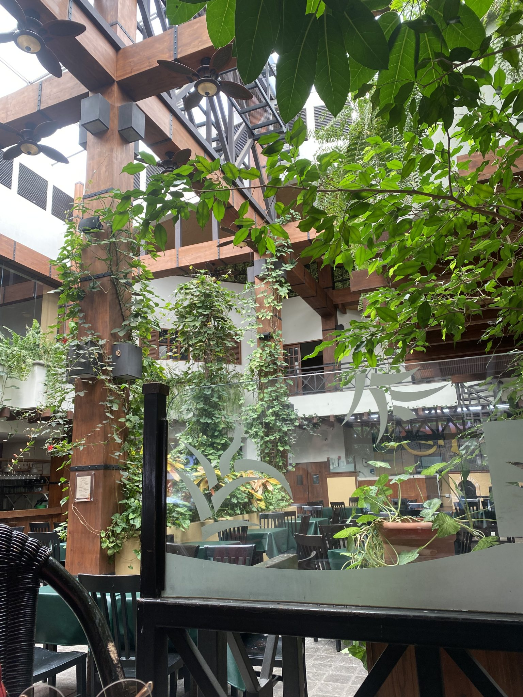
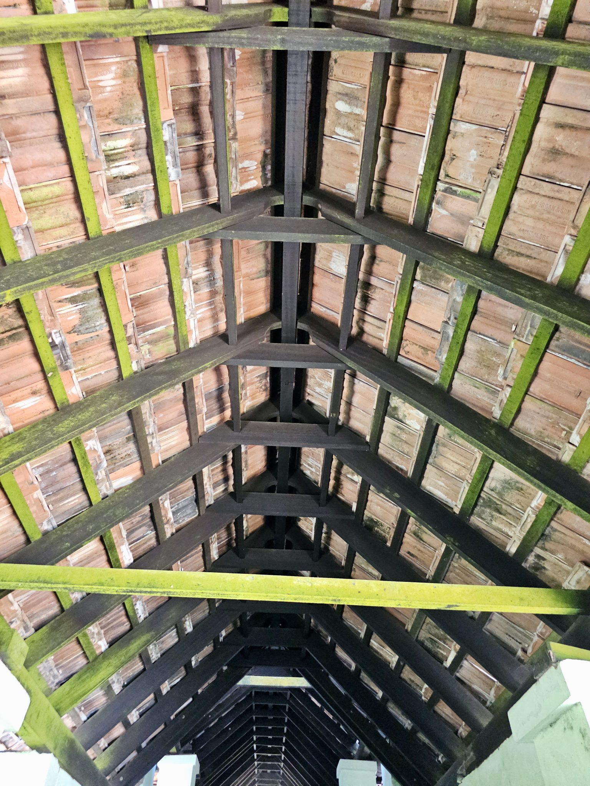
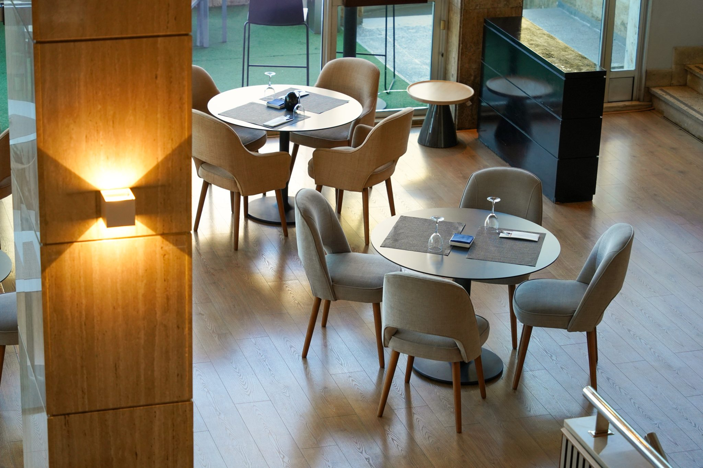
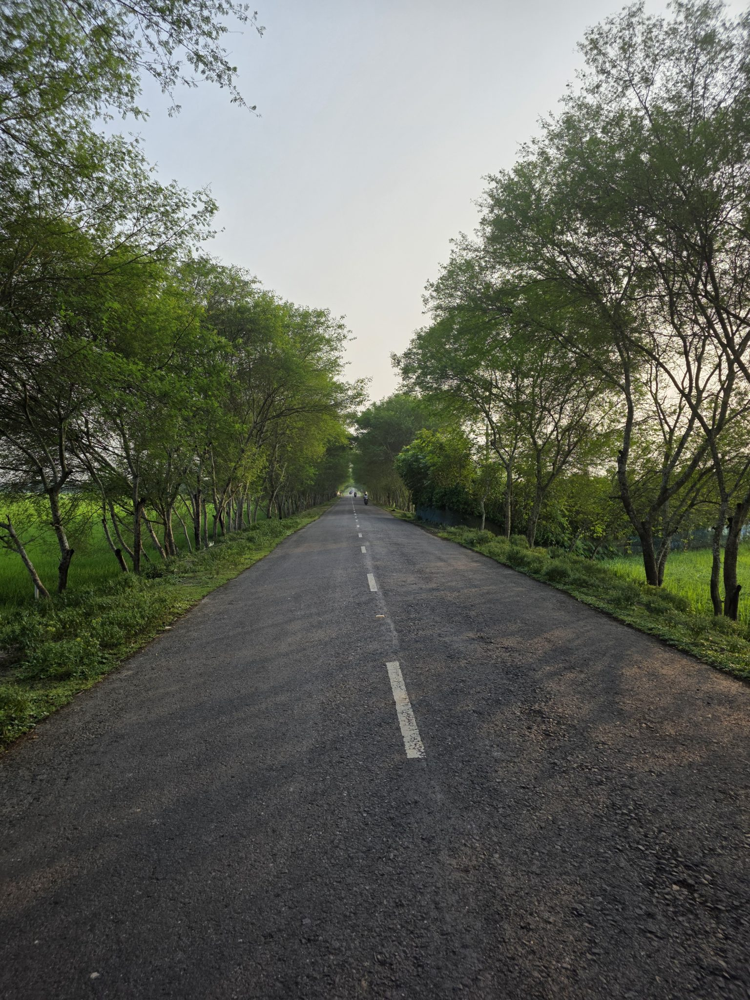

Google口コミ 4.2(132件)
里山の風と、
世界の食卓。
緑に包まれた茅葺き風の古民家で味わう、グリル・蒸し・土鍋の創作多国籍料理。
お昼時は満席になることが多いため、事前のご予約がおすすめです。
CONCEPT
茅葺きの古民家で、
世界を旅するように食べる
緑豊かな里山にたたずむ、茅葺き風の木造建築。大きな窓からは新緑や四季折々の景色が広がり、窓側の席でなくても、店内のどこにいても開放的な空気を感じられます。
そんな静かな里山の空間で味わえるのは、洋食・中華・アジア各国の要素が溶け合う創作多国籍料理。ビーフシチューや塩麹オーブン焼きといった洋食の定番から、土鍋の麻婆豆腐、カオマンガイ、ベトナム風生春巻きまで、ジャンルを横断したメニューが食卓に並びます。
「山の中の静けさ」と「世界各地の食文化」——一見交わらないふたつが同居しているのが、この店ならではの個性です。



INTERIOR
窓の向こうに広がる、里山の四季
大きな窓の外には、里山の新緑が広がります。窓側の席はもちろん、店内のどこに座っても景色を感じられる開放的なつくりです。
騒がしすぎず、落ち着いた雰囲気の中でゆっくりお食事を楽しめる空間で、大人の女性のお客様からもご家族連れまで、幅広い方にくつろいでいただけます。
スタッフの対応が丁寧で親切だという声を、多くのお客様からいただいています。
ORDER
注文はスマホで、
料理はすぐに。
お席のスマホ・タブレットから注文できるモバイルオーダーを導入しています。里山の静けさの中に、現代的な注文のスムーズさが同居しているのも、この店らしさのひとつです。
「注文してから料理が出てくるのがとても早い」という驚きの声を、来店されたお客様から数多くいただいています。
VOICE
訪れた方々の声
4.2Google口コミ 132件
出典: Googleマップの口コミより(要約・匿名化して掲載)
「緑豊かな場所に佇む茅葺き風の建物がすごく素敵で、大きな窓から新緑を眺めながら食事ができる開放的な空間でした。」
「土鍋で出てくる麻婆豆腐は最後までとにかく熱々。程よい辛さと旨味がぎっしりで、ご飯が止まらなくなりました。」
「料理は席からスマホで注文するタイプで、お料理の提供がとても早くて驚きました。」
「ハーフサイズ、ごはん少なめ、ミニサイズなど選べるので、色々食べたい時にありがたいです。」
「スタッフさんは皆さん感じがよく、優しい感じです。」「従業員の方々の温かい接客まで、すべてが本当に素晴らしかったです。」
「三連休のど真ん中でしたが、当日の電話予約にも快くご対応いただけました。」
NEARBY
お店の前には、パンとコーヒーの寄り道も
当店の建物前には、パンとコーヒーのテイクアウト店「リュヌ」があります。ご来店のお客様からも「オープン前の待ち時間に立ち寄った」という声をいただいており、開店前後のちょっとした寄り道スポットとしておすすめです。
※「リュヌ」は当店とは異なる独立した店舗です。営業時間や商品内容など詳細は当店では把握しかねますので、あらかじめご了承ください。
ACCESS
里山の一軒家へ、ようこそ
所在地は千葉県市原市山口。緑豊かな里山の中にたたずむ一軒家です。
人気店のため、お昼時は駐車場が満車近くになることがあります。お時間に余裕を持ってお越しいただくか、事前のご予約をおすすめします。
山あいの立地のため、道中は携帯電波が繋がりにくい場合がございます。事前に地図アプリでルートを保存しておくと安心です。
営業時間・定休日は季節や曜日により変動する場合がございます。お出かけ前にお電話でご確認いただくとより安心です。

RESERVE
ご予約はお電話がスムーズです
お昼時は満席になりやすい人気店のため、事前のご予約をおすすめしています。当日のお電話でも、これまで多くのお客様に柔軟にご対応してきました。
0436-26-6255 電話で予約する